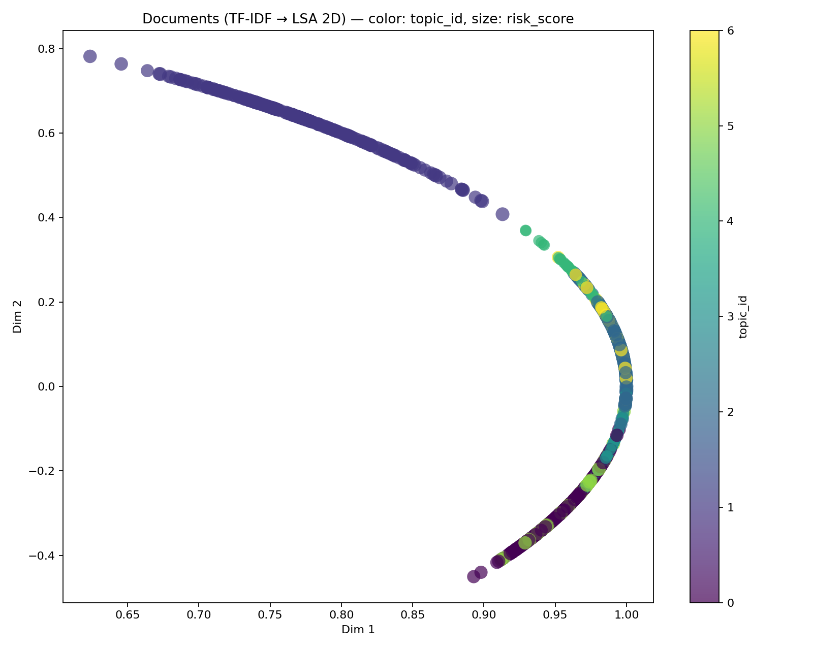

Artifacts dir: /Users/erikapat/Downloads/knwdrdeb/optimization/graphs_neo4j/text_fraud/artifacts

| id | pred_label | pred_conf | topic_id | topic_prob | sentiment | risk_score | recommendation | text |
|---|---|---|---|---|---|---|---|---|
| C0001 | 0 | 0.7505722994813678 | 0 | 0.9438125763719808 | 1.0 | 0.815515244517719 | Priority High. Route to analyst specializing in '0'. Check patterns related to topic '0_the_and_to_my'. | On the evening of September 12, 2023, around 7:30 PM, I was driving home from work along I-71 South near Columbus, Ohio. The weather was clear, and visibility was excellent. Suddenly, a deer ran across the highway, and despite my efforts to brake, I unfortunately collided with it. The impact caused significant damage to the front of my vehicle, and I immediately pulled over to assess the situation. I called the local authorities, and the police arrived shortly after, filing a report numbered 2023-0912-001. After the police completed their investigation, I contacted my insurance company and reported the incident. I obtained a copy of the police report to provide as documentation for my claim. The next day, I took my car to Joe's Auto Body Shop, which I have used in the past, and they provided me with a detailed estimate for the repairs totaling $4,500. I also took photos of the damage and the scene, timestamped on my phone, to support my claim. The shop assured me that they would begin repairs as soon as the insurance claim was processed. I have included all relevant documents, including the police report, the estimate, and the photos, to expedite the claims process. Thank you for your assistance in resolving this matter swiftly. |
| C0002 | 0 | 0.7473791855855648 | 5 | 0.6157963000579795 | 0.0 | 0.7825517647908656 | Priority High. Route to analyst specializing in '0'. Check patterns related to topic '5_the_and_to_was'. | I was driving home from work on October 15th around 5:30 PM, navigating the M-30 in Madrid when I was involved in an accident. I was in the left lane, and the traffic was moving at a reasonable speed when the car in front of me suddenly braked without warning. I didn’t have enough time to react, and I collided with the rear of their vehicle. Thankfully, no one was seriously injured, but my car sustained significant damage to the front end. I immediately called the police, and they arrived within 15 minutes, taking my report and the other driver’s information. The police report number is 789654321, which I’ve included with my claim. I also exchanged insurance details with the other driver, who was very cooperative. Later that evening, I got in touch with my insurance company and filed the claim. I’ve attached the invoice from the body shop that estimates the repairs will take about two weeks, and I’ve included photographs of the damage as well as the accident scene. |
| C0003 | 0 | 0.749977040120605 | 2 | 1.0 | 1.0 | 0.8469265220949421 | Priority High. Route to analyst specializing in '0'. Check patterns related to topic '2_the_and_to_my'. | On August 15, 2023, I returned home after a weekend trip to find significant water damage in my basement. It was a particularly heavy rainstorm the previous night, with local reports indicating over three inches of rain. Upon entering the house, I immediately noticed the musty smell and saw water pooling near the walls. The area around the water heater was especially soaked, and I knew I needed to act quickly to prevent further damage. I called a water damage restoration company, XYZ Restoration, who arrived the same day to assess the situation. They documented the damage and began the extraction process. I have their invoice, which totals $1,500 for the initial services rendered. I also contacted my insurance agent, Sarah Thompson, to inform her about the situation. She advised me to file a claim, which I did on August 16. I submitted the necessary forms along with the photos taken during the cleanup process. I made sure to include the local weather report as evidence of the storm that caused the damage. Additionally, I have a copy of the police report from my neighborhood showing that numerous homes were affected by flooding that night. I hope this information helps expedite the processing of my claim, as I would like to resolve this matter as soon as possible. |
| C0004 | 0 | 0.7411460136393613 | 4 | 1.0 | 0.0 | 0.5009569724438528 | Priority Medium. Route to analyst specializing in '0'. Check patterns related to topic '4_the_to_my_that'. | On January 15, 2023, I discovered water damage in my basement when I returned home from a short trip. It was quite unexpected as I had just had my roof checked for leaks a month prior by a contractor, who assured me everything was in good condition. The water appeared to be seeping in from a spot where the wall meets the floor, and I promptly called a restoration company. They sent over a technician who took some photographs, but I noticed later that none of them had timestamps. I was eager to get things sorted, so I paid for the initial assessment in cash, as they offered a discount for that. I’ve used this company before, and they seemed reliable, though I did find it curious that they had no official invoice format—just a handwritten receipt. To my surprise, I also received a notification about a new home insurance policy increase a couple of weeks prior to the water incident, which seemed a bit odd. I haven’t had any issues like this before, and it left me wondering about the timing of everything. |
| C0005 | 0 | 0.7486364786231414 | 2 | 1.0 | 0.0 | 0.7961221851964639 | Priority High. Route to analyst specializing in '0'. Check patterns related to topic '2_the_and_to_my'. | On August 15, 2023, I returned home from a weekend trip to find significant water damage in my basement. The heavy rain from the storms that swept through our area on August 14 was so intense that I wasn't surprised to see the water pooling in the corners. I immediately contacted a local restoration company, Ohio Flood Solutions, and they arrived the next morning to assess the damage. They provided me with a detailed invoice totaling $2,500 for the extraction of water, drying out the area, and necessary mold prevention treatments. I also have a police report number, 2023-7894, as I had to file for a storm-related incident due to the damage. The restoration team documented the situation and took photos, which I have saved with timestamps. I’m attaching these with my claim as well as a copy of their invoice and the police report. Given that our neighborhood is prone to these types of storms, I had increased my coverage a few months prior, which I believe is now proving to be beneficial. Thank you for your assistance in processing this claim. |
| C0006 | 0 | 0.7479384908273212 | 0 | 0.8287390756093084 | 0.0 | 0.763934959325291 | Priority High. Route to analyst specializing in '0'. Check patterns related to topic '0_the_and_to_my'. | On the afternoon of September 14, 2023, I was driving home from work along I-71 near Columbus, Ohio. The weather was clear and sunny, and there was no indication of any impending issues. Suddenly, a deer darted across the road directly in front of my car. I attempted to swerve to avoid hitting it, but unfortunately, I clipped the animal, resulting in significant damage to my front bumper and fender. After stopping safely on the shoulder, I assessed the damage and called the local police to report the incident. The officer arrived shortly after and filed a police report, which I have included with my claim (Report Number: 23456789). Fortunately, the deer managed to run off, but my car was left in need of repairs. I took my vehicle to a trusted auto body shop, 'Columbus Collision Center,' where they provided me with a detailed estimate for the repairs, totaling $2,500. I've attached the invoice dated September 16, 2023, which outlines the work needed. I rely on my car for daily commutes, and this accident has caused some disruption in my routine. I hope to get this resolved quickly so that I can get back on the road without any further delays. |
| C0007 | 0 | 0.7495980218045506 | 0 | 0.7912181546279583 | 0.0 | 0.7649306779116286 | Priority High. Route to analyst specializing in '0'. Check patterns related to topic '0_the_and_to_my'. | On the afternoon of February 15, 2023, I was driving home from work along the Ontario 401 when I encountered a sudden snowstorm. The visibility dropped significantly, and I struggled to keep control of my vehicle. I was traveling at a reduced speed when I lost traction and skidded on the icy shoulder. Unfortunately, I collided with a guardrail around 4:30 PM. After the accident, I pulled over safely and called the police to report the incident. The officer arrived shortly after, and I obtained a copy of the police report, which has the report number 2023-0215-101. I also took several photos of the damage to my car and the guardrail, and the timestamps show they were taken at 4:45 PM. The repair shop I’ve chosen, Reliable Auto Repairs, provided me with an estimate on February 16, which amounts to $3,200. I’ve kept all the relevant documents, including the estimate, the police report, and my insurance policy details to support my claim. |
| C0008 | 0 | 0.7422748108242612 | 3 | 0.8297851140445952 | 0.0 | 0.4953648864945567 | Priority Low. Route to analyst specializing in '0'. Check patterns related to topic '3_the_my_to_was'. | On the 15th of September 2023, I was driving my grey Ford Focus along the A1(M) towards Peterborough when I suddenly lost control of my vehicle. The weather was quite typical for the season, with light drizzle causing the roads to be slick. I had just passed a small rural area near the turn-off for the B1043 when I hit a patch of gravel on the roadside. I didn't see any other vehicles around, but I panicked and swerved, resulting in me crashing into a tree. My car was extensively damaged on the passenger side, and I immediately called the police. They issued a report number of 432789, which I have attached for reference. I had recently updated my insurance coverage, thinking it prudent given the new features I added to my vehicle. It’s funny how things can change so quickly, and I thought I could fix the car at a local garage I've used for years, but they were surprisingly busy. I took it to a different place, and they handed me a handwritten estimate that seemed off. I can’t recall the exact details, but the prices seemed much higher than the last time I was there. I also tried reaching out to a friend who witnessed the crash, but he hasn’t been available. Despite all this, I felt completely overwhelmed and just wanted to get everything sorted out without too much hassle. Attached to this claim, I’ve included photos of the car, though they don’t have timestamps, and the repair quotes I received. I just want to make sure everything is handled properly as I know how important these claims can be. |
| C0009 | 0 | 0.7528874147718538 | 1 | 1.0 | -1.0 | 0.7516899928049712 | Priority High. Route to analyst specializing in '0'. Check patterns related to topic '1_the_to_his_and'. | I am submitting this claim following the recent passing of my father, who had a life insurance policy with your company. He passed away on August 15, 2023, due to complications from a long-standing illness, which was documented by his healthcare provider, Hospital Universitario Gregorio Marañón in Madrid. The medical records were provided and include all the necessary details regarding his condition and treatment history. I am the primary beneficiary listed in the policy, and I have included a copy of the policy documents along with this claim. Additionally, I have attached a certified copy of his death certificate issued by the Registro Civil in Madrid. The policy number is 987654321, and I understand that I need to submit this claim within the allotted timeframe. I have also included the police report number from the local authorities confirming the passing. For your reference, the claim was initiated on August 20, 2023, and I have kept copies of all correspondence. I would appreciate it if you could process this claim as soon as possible, as I will need the funds to cover outstanding medical bills and other expenses related to his passing. If you require any further documentation or information, please do not hesitate to contact me directly. Thank you for your assistance during this difficult time. |
| C0010 | 0 | 0.7502678654458499 | 6 | 0.5398804297071417 | 0.0 | 0.7055389258543757 | Priority Medium. Route to analyst specializing in '0'. Check patterns related to topic '6_the_to_and_that'. | On the morning of October 15, 2023, I woke up to find water dripping from the ceiling in my living room, which is located in my terraced house on Maple Street in Reading. After inspecting the area, I discovered that the leak was coming from the bathroom above, where a pipe had burst. I immediately turned off the water supply and contacted a local plumber, who arrived that same day to assess the damage. The plumber, Mr. Thompson from Thames Plumbing Services, provided a detailed invoice for the repairs, which amounted to £350. I have attached a copy of the invoice along with his contact details for verification. To further document the situation, I took photographs of the leak and the surrounding areas, including timestamps indicating when they were taken. I also filed a report with the local council, as the incident may have affected neighboring properties due to the shared drainage system. The council reference number for this incident is 987654321. Thankfully, the weather was clear that day, which helped with the drying process after the repairs were made. I would appreciate your assistance in processing this claim as soon as possible, as the leak has caused quite a bit of disruption in my home. |
| C0011 | 0 | 0.7466612561213011 | 5 | 1.0 | 1.0 | 0.8321210071123074 | Priority High. Route to analyst specializing in '0'. Check patterns related to topic '5_the_and_to_was'. | On the evening of July 15th, 2023, I was driving my car along the M-30 in Madrid, heading home from a family gathering. The weather was clear, and I was following all traffic rules when suddenly, a vehicle cut me off. I had to brake quickly to avoid a collision, but unfortunately, the car behind me wasn't able to stop in time and crashed into my rear bumper. Immediately, I pulled over to the side of the road and called the police. The officer arrived within twenty minutes and filed a report, which I have a copy of, with the report number 2023-045678. After the police left, I exchanged information with the other driver, who was apologetic and said he would take responsibility. I took several photos of the damage to both vehicles at the scene, and I made sure to capture the license plate numbers. My car, a 2018 Seat Leon, sustained a significant dent and some scratches that I knew would need professional repair. I took the vehicle to my local body shop, Carrosserías Sánchez, on July 17th, where they provided me with an estimate of €1,200 for the repairs. They assured me they could complete the work within a week. I also checked my insurance policy with Seguros Madrid, and I confirmed that my coverage included rear-end collisions. I plan to file the claim with them shortly, as I have all the necessary documentation, including the police report and the repair estimate. I just want to ensure that everything is handled smoothly. |
| C0012 | 0 | 0.7474685699335035 | 0 | 0.8648386907652372 | 1.0 | 0.8136530067890004 | Priority High. Route to analyst specializing in '0'. Check patterns related to topic '0_the_and_to_my'. | On the afternoon of October 15th, 2023, I was driving along I-71 near Columbus, Ohio, when I suddenly encountered a deer crossing the highway. Despite my attempts to brake and swerve to avoid it, I ended up colliding with the animal. The impact caused significant damage to the front of my car, specifically the hood and left fender. I immediately pulled over to the side of the road and called the local police to report the incident. The officer arrived shortly thereafter, took my statement, and filed a report, which I have a copy of with the report number 2023-56789. I also took several photos of the damage and the location, which clearly show the visibility was good and the weather was clear that day. I have attached the photos to my claim along with the invoice for the repairs from Joe's Auto Body Shop, which is located just a few blocks from my home. They’ve provided an estimate of $3,200 for the repairs, and I’m hoping for a quick resolution to get my vehicle back on the road. |
| C0013 | 0 | 0.7422848977451432 | 3 | 0.7763393161086458 | -1.0 | 0.4453709386470859 | Priority Low. Route to analyst specializing in '0'. Check patterns related to topic '3_the_my_to_was'. | On March 15, 2023, I was driving home from work along US-1 in Florida when I encountered a sudden downpour. The visibility was reduced significantly, and as I was navigating through the rain, my car skidded off the road into a nearby palm tree. I had just upgraded my insurance policy two weeks prior, so I was relieved to know I had coverage. The impact wasn't severe, but it left some noticeable scratches on the side of my vehicle. I contacted the police immediately, and they arrived to take a report, which I have a copy of (Report No. 456789). I spoke with a few nearby residents who saw the incident, but I haven't been able to reach one of them since then. The tow truck I called to retrieve my car took it to a shop that I’ve used before, and they quoted me about $1,200 for the repairs. I have the invoice from them, but it was handwritten and doesn’t show a timestamp. I was surprised to learn that the shop had just worked on my car a few months earlier for a similar issue, but I thought it was a coincidence. I’ve submitted everything to the insurance company, including photos of the damage, which I took shortly after the accident, but those don’t have any metadata attached. |
| C0014 | 0 | 0.7479461188005889 | 0 | 0.9523989143132248 | 0.0 | 0.7639395361092516 | Priority High. Route to analyst specializing in '0'. Check patterns related to topic '0_the_and_to_my'. | On the evening of September 14th, I was driving home from work along the A1(M) when my car was struck by another vehicle. It was around 6:30 PM, and there was a light drizzle, typical for this time of year. I had just merged into the left lane when I heard a loud crash; the other driver had failed to signal and changed lanes abruptly. After the impact, I managed to pull over safely to the side of the road near a row of terraced houses. I immediately called the police and reported the accident, and they arrived within about twenty minutes. The officer took my statement and provided me with the report number, which is 2023-92714. I also exchanged details with the other driver, who gave me their insurance information. Fortunately, I had my phone with me, so I took several photos of the damage to both vehicles and the surrounding area, which clearly show the conditions at the time. After the incident, I visited a local garage, 'Green & Sons Autocare,' on September 16th for an assessment. They provided me with an invoice detailing the necessary repairs, which came to £1,200. I have attached that invoice along with a copy of the police report in my claim submission. The repairs took about a week, and I picked up my car on September 23rd. Overall, while it was an unfortunate experience, I feel fortunate that no one was seriously hurt, and I hope this claim process goes smoothly. |
| C0015 | 0 | 0.7489540417344358 | 1 | 1.0 | 1.0 | 0.8493299689825204 | Priority High. Route to analyst specializing in '0'. Check patterns related to topic '1_the_to_his_and'. | I am writing to submit a life insurance claim for my husband, James Smith, who passed away unexpectedly on January 10, 2023. He had been feeling unwell for several weeks, so we visited the local clinic in Burnaby on January 5, where the doctor diagnosed him with pneumonia. Unfortunately, despite following the prescribed treatment plan, his condition worsened, and he was admitted to the hospital on January 8. I have attached the medical records from both the clinic and the hospital, which detail his diagnosis and treatment history. The hospital discharged him on January 9, but we received a call early the next morning informing us of his passing due to complications. I also have a police report number (CA123456) that documents the circumstances surrounding his death, should that be needed for verification. The policy was in good standing, and I have attached a copy of the policy document along with my identification. I made sure to inform the insurance company about the event as soon as I could, on January 12, and all communication has been documented in emails that I can provide if necessary. My husband had made me the beneficiary of the policy a couple of years ago, which I believe is still valid. I hope to settle this claim swiftly, as we had counted on this financial support during a very difficult time. Thank you for your assistance, and please let me know if you need any additional information. |
| C0016 | 0 | 0.7503056561455004 | 2 | 0.854203508501922 | -1.0 | 0.7471236917098794 | Priority Medium. Route to analyst specializing in '0'. Check patterns related to topic '2_the_and_to_my'. | On January 15, 2023, I returned home from work to find water damage in my basement. It appeared that a pipe had burst, causing significant flooding. I immediately contacted a local plumber, who arrived the same day and provided me with an invoice detailing the repairs needed. The plumber's report indicated that the issue was due to aging pipes, which I had not replaced in years. I also took photographs of the damage, clearly timestamped on my phone, to document the extent of the flooding. I filed a police report (number 234567) as required by my insurance company to verify the timeline. In addition, I reached out to my insurance agent, who advised me on the steps to take to submit a claim. I have included all necessary documentation, such as the plumber’s detailed report, my photographs, and the police report, with my claim submission. |
| C0017 | 0 | 0.7459499129299364 | 0 | 1.0 | 1.0 | 0.8127418125868602 | Priority High. Route to analyst specializing in '0'. Check patterns related to topic '0_the_and_to_my'. | On the morning of September 15th, 2023, I was driving along the A1(M) near Stevenage when I encountered an unexpected situation. The weather was a bit drizzly, and the roads were slick, but visibility was still decent. I was in the left lane, moving at a moderate speed, when suddenly, a roe deer leapt onto the road right in front of me. I had little time to react; I swerved to avoid the animal, but unfortunately, I ended up hitting the barrier on the side of the road. After the incident, I parked safely and called the police, who arrived within about 20 minutes and filed a report, which I have included in the claim. The report number is 6789A. I contacted my insurance provider shortly after, and they advised me to get an assessment of the damages. The garage I usually go to, Smith & Sons, provided an estimate, which came to £1,200, and I have attached their invoice as well. I did ensure to take photos of my car's damage as well as the barrier, which I’ve timestamped, just to provide a clear visual record. Thankfully, no one was hurt, and I’ve now set up a temporary repair while waiting for further instructions from my insurance adjuster. Overall, it was a stressful experience, but I’m hoping to get this resolved quickly and smoothly. |
| C0018 | 0 | 0.7412004401005513 | 4 | 0.713426075446675 | 0.0 | 0.5009896283205668 | Priority Medium. Route to analyst specializing in '0'. Check patterns related to topic '4_the_to_my_that'. | I want to report a claim regarding some water damage that occurred at my home on June 15, 2023. It was an unusually dry day for that time of year here in Ohio, so I found it strange when I noticed a significant leak in my basement. I quickly got in touch with a local contractor, Mike's Home Repair, who has done work for me in the past. He provided me with an estimate of $4,500, which seemed a bit high, but he assured me that it included all necessary repairs. I paid him in cash that same day, and I have a handwritten receipt, although it doesn't have his company stamp. I also recently increased my coverage on the policy just a month prior, which made me think I was well-protected. It might be worth mentioning that my neighbor, who helps with repairs sometimes, was out of town when this happened. I have photos of the damage that I took, but they lack timestamps, which seems odd now. I’ve also noticed that Mike was the one who repaired my roof last year after a storm, and I didn’t have any issues with the basement before that. |
| C0019 | 0 | 0.7488243770902314 | 0 | 1.0 | 0.0 | 0.7644664910830371 | Priority High. Route to analyst specializing in '0'. Check patterns related to topic '0_the_and_to_my'. | On the morning of October 15, 2023, I was driving home from the grocery store along the A1(M) when I suddenly encountered a small roe deer that dashed across the road. Despite my best efforts to brake, I couldn't avoid a collision. The incident occurred around 10:30 AM, and the weather was rather drizzly, which made visibility slightly impaired. After safely pulling over to the side, I called the police to report the accident and they arrived shortly after. They provided me with a police report numbered 58724, which I have attached to my claim. I also took photos of the damage to my vehicle, including the rear passenger side, and I made sure the timestamps were included. I visited a local body shop, ABC Auto Repairs, on October 16, where I received a detailed invoice for the repairs. The total cost came to £1,200, and I have all documentation, including the receipts and photos, ready for review. |
| C0020 | 0 | 0.7481522141310257 | 0 | 1.0 | 1.0 | 0.8140631933075138 | Priority High. Route to analyst specializing in '0'. Check patterns related to topic '0_the_and_to_my'. | On April 15, 2023, I was driving home from work on I-71 in Ohio around 5:30 PM when I suddenly encountered a deer crossing the road. I didn’t have enough time to brake, and unfortunately, I hit the animal. Immediately after the collision, I pulled over to the shoulder and called the local authorities to report the incident. The police arrived within about twenty minutes and provided me with a report, which I have attached to my claim for reference. The officer noted the time of the accident and took my statement about the events leading up to it. My car sustained significant damage to the front bumper and hood, and I decided to take it to Smith’s Auto Body for repairs, as they have a good reputation in the area. I also have the invoice from them dated April 20, showing the repairs totaled $3,200. Thankfully, there were no injuries to myself or anyone else involved, as it was a quiet stretch of road at that time. I am including a copy of the police report and the repair invoice with my claim, as well as photos of the damage taken the day after the incident. I hope this information helps clarify the circumstances surrounding the accident. |
| C0021 | 0 | 0.7465556514927623 | 0 | 0.7933219731419922 | 0.0 | 0.7631052557245557 | Priority High. Route to analyst specializing in '0'. Check patterns related to topic '0_the_and_to_my'. | On March 5th, 2023, around 4:30 PM, I was driving on the Ontario 401, just east of Woodstock, when the unexpected happened. I was in the right lane, cruising along at about 65 mph, when suddenly a deer dashed out from the trees on the left side of the road. I had barely enough time to react; I swerved to avoid it, but unfortunately, I ended up losing control of my vehicle. My car skidded on the icy shoulder and collided with the guardrail. It was quite a startling experience, and I made sure to keep my wits about me as I pulled over safely to the side of the highway. I immediately called 911 and reported the incident, which resulted in a police officer arriving on the scene. I got a copy of the police report, numbered 2023-23456, which detailed the accident and confirmed that no other vehicles were involved. After the police left, I took a few pictures of the damage to my car and the guardrail, noting the time on my phone. Later that evening, I arranged for my car to be towed to a local auto body shop, ABC Auto Repairs, where I received an estimate for the repairs. The shop provided a detailed invoice dated March 6th, totaling $3,200. I filed my claim with my insurance company the next day, submitting all necessary documents, including the police report and the invoice from the repair shop. I hope this information helps clarify the details of my claim. |
| C0022 | 0 | 0.7487332672111853 | 5 | 1.0 | 0.0 | 0.7833642137662379 | Priority High. Route to analyst specializing in '0'. Check patterns related to topic '5_the_and_to_was'. | On July 15, 2023, around 3:30 PM, I was driving my blue Renault Clio along the M-30 ring road in Madrid when I was involved in a minor collision. I had just merged into the left lane near the Avenida de la Paz exit when a red Ford Focus suddenly changed lanes right in front of me, causing me to swerve and hit the concrete barrier. Thankfully, there were no serious injuries, and I immediately pulled over to assess the damage. The front bumper of my car was crumpled, while the other driver appeared shaken but unharmed. I called the police, and they arrived promptly; the report number is 1234-5678. I exchanged insurance details with the other driver, who was very cooperative. I also took photographs of both vehicles and the location, which I have saved on my phone with timestamps. Subsequently, I went to the local garage on Calle de Vallehermoso, where I received an estimate of €1,200 for the repairs. I filed my claim online on July 17, providing all the necessary documents, including the police report and repair estimates. I hope this information helps facilitate the process efficiently. |
| C0023 | 0 | 0.7488754716575388 | 1 | 0.9150161108639208 | -1.0 | 0.7492828269363823 | Priority Medium. Route to analyst specializing in '0'. Check patterns related to topic '1_the_to_his_and'. | I am writing to file a claim for my husband's life insurance policy, which he held with your company. He passed away on the 5th of October 2023, after a long battle with illness. His medical records detail his condition, and I've attached a copy of the death certificate issued by the hospital in Madrid where he was treated. The attending physician's name is Dr. Javier López, and I have included his contact information should you need to verify any details. I also submitted the police report number, which is 789456, as required. We had last updated the beneficiary information just a few months prior, on July 15th, to ensure that everything was in order. I want to be transparent about everything, so I have included bank statements that show the premium payments made consistently over the years. The policy number is 987654321, and it is a whole life insurance policy. I have also enclosed a copy of the original policy documents for your reference. It feels overwhelming to deal with all of this right now, but I appreciate your help in processing the claim. If there's anything else you need, please don't hesitate to reach out. I can be reached at my home phone number, which is listed on the claim form, or via my email. Thank you for your understanding during this difficult time. |
| C0024 | 0 | 0.7469332367062194 | 2 | 0.8460897410867655 | 0.0 | 0.7951002400463107 | Priority High. Route to analyst specializing in '0'. Check patterns related to topic '2_the_and_to_my'. | I want to file a claim for the water damage that occurred in my basement on the evening of September 15th. It had been raining heavily all day, and I noticed some dampness on the floor around 7 PM. I immediately called my neighbor, who is also a contractor, to get his opinion. He came over and suggested I should check the drainage system since there had been issues in the past. After inspecting the area, we realized that the water was coming in through a small crack in the foundation. I took several pictures of the damage, which I can provide as part of my claim. The total damage estimate from my contractor is $2,300, and I have a detailed invoice dated September 17th showing all the repairs needed. I also filed a report with the local water department, which I can reference by report number 2023-4567. Thankfully, my home insurance policy covers this type of damage, and I've been a policyholder with your company for over ten years. I want to ensure that everything is handled as quickly as possible since the repairs need to be done before the weather turns colder. Let me know if you need any more information to process this claim. |
| C0025 | 0 | 0.7421042320853046 | 3 | 0.5936567139348521 | 0.0 | 0.4952625392511827 | Priority Low. Route to analyst specializing in '0'. Check patterns related to topic '3_the_my_to_was'. | I was driving home from work on the M-30 in Madrid around 6 PM on October 12, 2023, when I suddenly lost control of my vehicle and crashed into a guardrail. Thankfully, I wasn’t injured, but the car sustained significant damage. I called the police, and they issued a report, which I have with me; the report number is 789654. I remember it was a clear day with no rain, which is why I’m perplexed by how the accident happened. A couple of days later, I took my car to a body shop that a friend recommended, and they quoted me around €3,000 for the repairs, which seemed high, but I went ahead with it. Interestingly, I had just increased my coverage two weeks prior, but I assure you it was only because I wanted to feel more secure with my recent purchase. The body shop owner mentioned that he might be able to expedite the repairs for cash, which struck me as odd but convenient, so I agreed. I do have the handwritten receipt for that payment, though it feels somewhat unusual. I can provide a copy of the police report and the shop’s invoice, and I’m fully committed to resolving this matter swiftly. |
| C0026 | 0 | 0.7490078975884529 | 2 | 1.0 | -1.0 | 0.7463450365756509 | Priority Medium. Route to analyst specializing in '0'. Check patterns related to topic '2_the_and_to_my'. | On January 15, 2023, I noticed a significant leak in the ceiling of my living room, which was alarming given that I had just renovated the entire area in December. After inspecting the damage, I found that the source appeared to be a burst pipe in the attic, likely due to the cold snap we had experienced earlier that month. I immediately contacted a local plumber, Smith & Sons Plumbing, who arrived the next day and provided a detailed invoice for the repairs totaling $1,200. Their service report, which includes timestamps and photographs of the damage, confirms the issue arose from wear and tear, and not any prior negligence on my part. I filed a report with the local fire department to document the leak for insurance purposes, noting their reference number 7890123. Subsequently, I reached out to my insurance company to initiate the claim process and submitted all related documents, including the contractor’s invoice and the plumber's assessment. My home insurance policy number is 456789123, and I have maintained consistent coverage since 2018. The repairs were completed by January 25, 2023, and I ensured everything was up to code with the city regulations. Thankfully, no other damages were found beyond what was already reported, allowing me to move forward without further complications. I am looking to recover the cost of repairs through this claim, which I believe is covered under my policy. |
| C0027 | 0 | 0.749926647603552 | 1 | 1.0 | 1.0 | 0.8499135325039902 | Priority High. Route to analyst specializing in '0'. Check patterns related to topic '1_the_to_his_and'. | On May 15, 2023, I noticed my mother had been feeling unwell for several weeks, so I took her to the local clinic on High Street in our town of Watford. After a thorough examination, the doctor advised us that further tests were needed, and we were referred to the hospital for a more detailed assessment. The hospital appointment took place on May 22, where the doctors diagnosed her with a serious health condition. Given the urgency, I contacted the insurance provider to ensure that her policy was up-to-date and to inquire about the coverage for her treatment. I also provided them with the policy number and received confirmation that everything was in order. My mother had previously changed her beneficiary designation just a month prior, which was a decision made after thoughtful discussion among family members. We have always kept the documentation in good order, including receipts from the clinic and hospital dated within the last month. I maintained a meticulous record of all interactions, including the police report number for the ID check that the clinic required. The situation has been stressful, but I am grateful for the support of the health care team. I also made sure to save all related correspondence with the insurance company. It is my sincere hope that this claim is processed smoothly, as it would really help us manage the medical expenses going forward. If you need any further information or additional documents, please let me know, and I will provide them promptly. I appreciate your assistance during this difficult time. |
| C0028 | 0 | 0.7500567505456298 | 2 | 1.0 | 0.0 | 0.7969743483499571 | Priority High. Route to analyst specializing in '0'. Check patterns related to topic '2_the_and_to_my'. | On the evening of August 15, 2023, I returned home from work around 6:30 PM, only to find that my front door had been forced open. I immediately called the police, and Officer Gonzalez arrived at approximately 7:00 PM to assess the situation. After confirming the break-in, he filed a report under case number 2023-0894 and took fingerprints from the scene. I then began surveying the damage in my home. My television, laptop, and several pieces of jewelry were missing. All my doors and windows had been secured when I left, and the neighborhood is generally quite safe. The following day, I contacted my insurance agent, Maria Ruiz, who advised me to document everything thoroughly. I took photographs of the forced entry and the damage inside my living room, which were timestamped around 8:00 AM on August 16. In addition, I compiled a list of stolen items, including their estimated values, based on receipts and appraisals I had saved over the years. By August 20, I had submitted my claim online along with the police report and photos. Maria also provided me with a claim number, which is 2023-1567. I have remained in touch with her to ensure that all required documents were received. Overall, the process has been straightforward, and I am hopeful for a resolution soon. The break-in was a distressing experience, but I appreciate the support from both the police and my insurance company. |
| C0029 | 0 | 0.7501523225235037 | 0 | 0.9249085758664476 | 0.0 | 0.7652632583430006 | Priority High. Route to analyst specializing in '0'. Check patterns related to topic '0_the_and_to_my'. | On the evening of October 15th, 2023, around 6:30 PM, I was driving my blue Ford Focus along the A1(M) heading north towards Newcastle. The weather was typical for this time of year, with light drizzle making the roads a bit slippery. I was approaching the junction at Wetherby when suddenly, a roe deer darted across the road. I had no time to react, and unfortunately, I collided with the animal, which caused significant damage to the front of my car. I immediately pulled over to the side of the road and contacted the local police, who arrived about 20 minutes later to file a report. The police reference number for this incident is 87654321. After the accident, I took photographs of the scene and the damage to my vehicle, ensuring that I captured the location and surrounding area clearly. I then called my insurance provider to report the claim and requested a copy of the police report for my records. I have already obtained a detailed invoice from the garage where I plan to have the repairs done, which outlines the estimated costs. I aim to have all necessary documentation submitted by the end of the week to expedite the process. |
| C0030 | 0 | 0.7409570226916972 | 3 | 0.9609999576326484 | 0.0 | 0.4945742136150183 | Priority Low. Route to analyst specializing in '0'. Check patterns related to topic '3_the_my_to_was'. | On the afternoon of July 14th, while driving on I-71 near Columbus, I hit a deer that suddenly dashed across the highway. It was around 3 PM, and the weather was clear, which made it all the more surprising. I pulled over immediately and called the police, who arrived within 20 minutes and filed a report—report number 2023-7645. I had recently upgraded my coverage just a few weeks prior, thinking it was better to be safe than sorry. The deer caused quite a bit of damage to the front end of my car, and I took several pictures of the scene; however, I realized later that the photo metadata is missing some information. I contacted the body shop I’ve used before, as I felt comfortable with them, but I was surprised when they told me that they could fit me in right away. The invoice I received seemed a bit high, especially since I had repaired similar damages before, but I figured it was just the current market rates. I mentioned the incident to my neighbor, who also witnessed the accident, but when I tried to reach him later for his statement, I couldn't get ahold of him. All in all, it was an unexpected day, and I'm just trying to get everything sorted out with the insurance. |
| C0031 | 0 | 0.7390638375787308 | 3 | 1.0 | 0.0 | 0.4934383025472384 | Priority Low. Route to analyst specializing in '0'. Check patterns related to topic '3_the_my_to_was'. | On the 15th of September 2023, I was driving along the M-30 in Madrid around 3 PM when I suddenly lost control of my vehicle and crashed into a guardrail. I had just recently upgraded my insurance coverage, thinking it was a good idea to be safer on the road. The weather was clear that day, so I’m not sure why I lost traction. There were no other cars involved, which makes this incident feel a bit strange to me. I called the police immediately, and they issued a report, number 2023-5643, but I could only get a few details as I was shaken up. The repair shop I took my car to has worked on it before; I’ve used them a couple of times, and they usually do a decent job. However, when I asked for an invoice for the repairs, they provided me a handwritten one without any official header, which I found odd. I did take some photos of the damage, but there’s a chance they might not show the timestamps properly, and my friend who witnessed the accident seems hard to reach lately. I’m just hoping to get this sorted out without too much hassle, but I can’t shake the feeling that everything seems a bit off. I’ve had my car for over five years, and it was in perfect condition before this happened. It’s just frustrating that I have to go through all this, especially with the recent changes to my policy. I’m trying to be as transparent as possible while handling this claim, hoping it’ll all work out in the end. |
| C0032 | 0 | 0.7465053443800667 | 1 | 0.9238030145727336 | -1.0 | 0.747860750569899 | Priority Medium. Route to analyst specializing in '0'. Check patterns related to topic '1_the_to_his_and'. | I am writing to provide details for my life insurance claim following the unexpected passing of my uncle, Robert Smith, on February 15, 2023. He had recently updated his beneficiary designation to include me, which took place just a month prior to his death, and it raised a few eyebrows within the family. The event occurred at his home in Burnaby, BC, and it was ruled as natural causes. I have attached the medical examiner's report, which confirms this. However, I found it strange that he had not mentioned any serious health issues in our recent conversations, especially considering he was only 67 years old. We discussed his plans for retirement and he seemed completely healthy. The funeral expenses, which I handled on his behalf, totaled about $10,000, and I have included the invoice from the mortuary. I also spoke with a family friend who was present at the time of death, but they have been difficult to reach for confirmation. It's been a challenging time, and I want to ensure everything is processed smoothly. I'm hopeful that you can expedite the claim, as I've seen others have waited much longer. I appreciate your understanding in this matter. |
| C0033 | 0 | 0.7449481435204136 | 4 | 1.0 | 0.0 | 0.5032382503724843 | Priority Medium. Route to analyst specializing in '0'. Check patterns related to topic '4_the_to_my_that'. | On March 15, 2023, I discovered water damage in my home located in Seville, specifically in the living room where the ceiling had begun to show signs of leakage. It was a typical sunny day, and I was surprised to see the damage, considering there had been no recent rain or storms in the area. I immediately took photographs of the affected area, but unfortunately, my phone seems to have lost the metadata of those images. I contacted a local contractor, who claimed to have extensive experience in water damage repair, and he provided me with a handwritten receipt for the emergency work he performed that same day, totaling €2,500. Upon his recommendation, I also purchased additional coverage for water damage a month prior, which felt prudent at the time. My neighbor, who has lived next door for years, mentioned he had recently faced similar issues, and I wondered if this was becoming a neighborhood problem. I requested a formal inspection report from the contractor, but he hasn't returned my calls, which is concerning. I submitted the claim to my insurance provider on March 17, 2023, including the contractor's receipt and my photographs. I was told the review would take some time, but I hope to resolve this quickly as the living room is now in quite a state. Overall, while I believe the situation is genuine, some aspects have left me feeling uneasy about the whole process. |
| C0034 | 0 | 0.7479664584680572 | 5 | 0.4949824854944332 | 0.0 | 0.7829041285203611 | Priority High. Route to analyst specializing in '0'. Check patterns related to topic '5_the_and_to_was'. | On October 15, 2023, I was driving home from work along the M-30 in Madrid around 5:00 PM. The traffic was steady, and the weather was clear, which is typical for this time of year. Suddenly, a car swerved into my lane from the left without signaling, causing me to collide with the concrete barrier. I managed to pull over safely, and thankfully, no one was injured. I immediately called the police to report the accident, and they arrived on the scene shortly after. I received a police report number, 456789, which I kept for my records. The other driver seemed cooperative, and we exchanged insurance information before parting ways. I had my car towed to a local body shop I’ve used in the past, and they provided a detailed estimate for the repairs, which totaled €2,500. I have the invoice dated October 16, 2023, which I’ve attached to my claim. I also took photos of both vehicles and the damage, ensuring they were timestamped. Afterward, I contacted my insurance company to start the claim process, and they advised me to submit all relevant documents, which I did promptly. I hope this information helps clarify the situation and facilitates the processing of my claim. |
| C0035 | 0 | 0.7437768682169492 | 1 | 1.0 | -1.0 | 0.7462236648720285 | Priority Medium. Route to analyst specializing in '0'. Check patterns related to topic '1_the_to_his_and'. | I’m writing to report a claim related to my late husband, Robert, who passed away on February 12, 2023. We had recently changed our life insurance policy beneficiary to our daughter, Emily, just a month prior, on January 5. It was a cold winter day when I got the news; Robert had a sudden heart attack while out on a walk near the local park. It was truly shocking. I have all the documents in order, including the medical report, which I've attached, stating that he had no prior significant health issues. I did reach out to the clinic that treated him, but they seem a bit hesitant to provide all the records I requested. I've also included the obituary and a police report that mentions the exact time and place of his death, though it oddly doesn't specify what kind of activity he was doing. I’ve been keeping track of all the expenses related to the funeral; I have invoices from the funeral home, and they seem a bit higher than the average. My husband's passing has been incredibly tough on us, and I just want to ensure everything is settled properly, especially since I noticed the policy had been reinstated just a month before he passed away. I’m hopeful this claim goes smoothly for Emily's sake, and I can provide any additional documentation if necessary. |
| C0036 | 0 | 0.7474601121300325 | 2 | 1.0 | 0.0 | 0.7954163653005986 | Priority High. Route to analyst specializing in '0'. Check patterns related to topic '2_the_and_to_my'. | On the evening of October 12, 2023, I returned home from work to find that my front door had been forced open. I live in a terraced house on Elm Street, and I was immediately alarmed to see the mess inside. The living room had been ransacked, with drawers pulled out and items strewn about. After calling the police, I received the incident report number 2023-EXC-4567, which I will include with my claim. They arrived within 20 minutes, and I was able to provide them with a detailed account of what was missing, including electronics and several pieces of jewelry that I inherited from my grandmother. I have attached dated invoices and photographs of the damaged areas as well as the stolen items for your reference. Additionally, I had just renewed my home insurance policy a month prior, which I believe provides adequate coverage for the losses I incurred. I also made sure to file a report with my local council, as they suggested it might help with any follow-up investigations. The police mentioned that there have been other break-ins in the area recently, so I'm hoping for a swift resolution to my claim. |
| C0037 | 0 | 0.750208065963929 | 1 | 1.0 | 0.0 | 0.8000823835202164 | Priority High. Route to analyst specializing in '0'. Check patterns related to topic '1_the_to_his_and'. | I am writing to file a life insurance claim following the unexpected passing of my husband, John, on March 15, 2023. He had recently been experiencing health issues, which resulted in several visits to the local clinic in Victoria, and I have attached all relevant medical records that detail his condition leading up to his death. We had a life insurance policy through your company, and I believe it was set to expire on April 1, 2023, although I had contacted customer service to confirm our coverage just a month prior. I've included the policy number and a copy of the death certificate that was issued by the hospital, along with the coroner’s report, which states the cause of death as a heart attack. As I gather all the necessary documentation, I also wanted to mention that I had recently updated the beneficiary details on the policy, making sure our children were listed to receive any benefits. The policy was set up about five years ago, and I have always kept the premiums up to date, as evidenced by the payment receipts I've attached. I hope to process this claim as quickly as possible, as it is important for my family during this difficult time. If you need any additional information, please do not hesitate to reach out; I am committed to making this process as smooth as possible. |
| C0038 | 0 | 0.7428485698980549 | 4 | 0.7245250506142916 | 0.0 | 0.501978506199069 | Priority Medium. Route to analyst specializing in '0'. Check patterns related to topic '4_the_to_my_that'. | On September 15, 2023, I returned home from a weekend trip to find water damage throughout the living room and dining area. I initially thought it might have been a burst pipe, but after inspecting the basement, I discovered the source was a leak from the upstairs bathroom. I called a local contractor, Mike's Home Repairs, who quickly came out to assess the situation. He provided me with a handwritten estimate of $4,500, which seemed reasonable at the time, but I later learned that he often worked with insurance claims. I submitted the claim with a description of the damage and included a police report number for the initial investigation of the water leak. Interestingly, just a month prior, I had increased my coverage, which I thought was wise, but now I can't help but wonder if it looks suspicious. The photos I took of the damage don't have timestamps, but I assured the adjuster they were taken right after I discovered the issue. I recall feeling overwhelmed during that time, as my cousin, who is an acquaintance of the contractor, suggested he was reliable. As I navigate through this claim, I want to be as helpful as possible, but I can't shake the feeling that there might be more than meets the eye here. |
| C0039 | 0 | 0.7497465046100197 | 0 | 0.779359253303485 | 1.0 | 0.81501976759491 | Priority High. Route to analyst specializing in '0'. Check patterns related to topic '0_the_and_to_my'. | On the morning of January 15, 2023, I was driving along Ontario 401, heading towards Toronto for a business meeting. The roads were clear, but there had been some icy patches due to the recent freeze-thaw cycle. As I approached the exit for Highway 403, I suddenly lost control of my vehicle when I hit a particularly slick spot. I skidded across two lanes before colliding with the guardrail. Thankfully, I was wearing my seatbelt and wasn't seriously injured, though my car sustained considerable damage. I immediately called the local police, who arrived about 20 minutes later to assess the situation and file a report. The report number is 456789. I also collected contact information from a witness who stopped to help me, which I have included. After the accident, I contacted my insurance provider and submitted the claim along with the police report and photos of the damage taken on my phone. The vehicle was towed to a repair shop on January 16, and they provided me with an estimate of $4,500 for the necessary repairs. I've attached all relevant documents, including the tow receipt and the estimate. I truly appreciate your assistance in processing this claim as quickly as possible. |
| C0040 | 0 | 0.7507148208321688 | 0 | 0.7297410995969339 | 0.0 | 0.7656007573281995 | Priority High. Route to analyst specializing in '0'. Check patterns related to topic '0_the_and_to_my'. | On the morning of December 5, 2023, I was driving my 2018 Honda Accord northbound on Ontario 401 near the exit for Mississauga when the incident occurred. The weather conditions were clear, with no rain or fog, and the road was dry. I had just merged into the second lane when I noticed a sudden movement to my right. A deer unexpectedly darted across the highway, and I instinctively swerved to avoid a collision. Unfortunately, my vehicle lost traction, and I skidded into the guardrail. The impact caused significant damage to the front side of my car. After regaining control, I safely pulled over to the shoulder and called 911, reporting the incident to the police. Officer Smith arrived on the scene shortly after and documented the event under report number 234567. I also took photographs of the damage and the position of my vehicle for my records. A local towing company arrived to assist with moving my car, and I later received an invoice dated December 5, totaling $150 for the tow. I have submitted all the relevant documents, including the police report and the towing invoice, for the claim process. I appreciate your attention to this matter and look forward to resolving it promptly. |
| C0041 | 0 | 0.7452543431837992 | 1 | 1.0 | -1.0 | 0.7471101498521385 | Priority Medium. Route to analyst specializing in '0'. Check patterns related to topic '1_the_to_his_and'. | I want to report a claim regarding my late husband, Peter, who passed away on March 15, 2023. We had a life insurance policy with your company that was updated just a few months prior, around January, to increase the coverage amount significantly. The initial beneficiary was our son, but I had recently changed that to myself in February, which I hope is not an issue. On the day he passed, we were at our home on Oxford Street, and he suddenly collapsed while we were discussing plans for a family gathering. I immediately called for an ambulance, which arrived within 10 minutes, but unfortunately, he was pronounced dead at the hospital. I have a copy of the police report (number 4573/23) as well as the hospital records, which I can provide if necessary. I had also spoken to a witness who lived nearby, but I haven't been able to contact them since; they seemed to have gone away for a while. There were some prior concerns about his health, but nothing seemed alarming enough that I thought we needed to seek medical advice. I do have all the invoices from the funeral, but they are handwritten, which I know might raise some questions. I hope everything can be processed smoothly, as we are still trying to cope with this sudden loss. Thank you for your understanding and support during this difficult time. |
| C0042 | 0 | 0.7492933238465461 | 0 | 1.0 | 1.0 | 0.814747859136826 | Priority High. Route to analyst specializing in '0'. Check patterns related to topic '0_the_and_to_my'. | On September 15, 2023, around 5:30 PM, I was driving home from work along I-71 northbound, just past the exit for State Route 82 in Ohio. The weather was clear, and visibility was excellent. Suddenly, a deer darted out onto the road, and despite my best efforts to brake, I collided with the animal. The impact caused significant damage to the front end of my vehicle, specifically the hood and bumper. I immediately pulled over to the side of the road and called the local police. They arrived shortly thereafter and filed a report, which I have a copy of, with the report number 2023-8765. The officer also noted the conditions and the presence of the deer on the scene. After the accident, I contacted my insurance company to report the claim and provided them with all the necessary details. I had my car towed to a reputable body shop, Auto Experts, where I was given an estimate for the repairs, totaling $3,200. The invoice from the shop, dated September 16, is attached to my claim. Thankfully, I was not injured, and I was wearing my seatbelt at the time. I have also included photos of my car taken right after the accident, which clearly show the damage and the location of the incident. My policy covers wildlife collisions, so I'm hopeful that this claim will be processed smoothly. |
| C0043 | 0 | 0.7514636962934805 | 6 | 0.6552451622504809 | -1.0 | 0.6562564243629541 | Priority Medium. Route to analyst specializing in '0'. Check patterns related to topic '6_the_to_and_that'. | I am writing to file a claim regarding water damage that occurred in my home on October 10th, 2023. After a series of persistent drizzle showers leading up to that day, I noticed a significant leak in my living room ceiling, which became increasingly worse after the rain. I immediately reported the issue to a local plumbing company, 'AquaFix Solutions', who sent a technician to assess the situation on October 12th. They provided me with an invoice for their services, which totaled £250, and included a detailed report confirming a blocked gutter was the cause. I’ve attached a copy of that invoice along with photographs taken on the day of the incident, which clearly show the extent of the damage. The local council also issued a report on October 11th about the persistent rainfall affecting the area. I've included a copy of their statement as well, as it provides context for the weather conditions at the time. Lastly, the reference number from my initial report is #2023-1010-267, which I hope will aid in tracking my claim more efficiently. Thank you for your assistance in this matter. |
| C0044 | 0 | 0.7415484398725098 | 3 | 0.7974631676087137 | -1.0 | 0.4449290639235059 | Priority Low. Route to analyst specializing in '0'. Check patterns related to topic '3_the_my_to_was'. | On January 15th, I was driving along Highway 1 near Hope, BC, when I suddenly lost control of my vehicle. It had been snowing earlier that day, but by the time of the incident, the roads seemed clear. I remember it vividly; I was coming around a bend when my car slid off the icy shoulder. I didn't hit anything, but the car ended up lodged in a ditch. I called my insurance company right after the accident, and they asked for a police report number, which I was given as 987654. Interestingly, my mechanic, who has worked on my car before, happened to be the only one available to tow it, and he provided me with a handwritten invoice for his services later that same day. When I looked back at the photos I took of the scene, I noticed that they didn’t have any timestamps. Additionally, I had just upgraded my coverage a few weeks prior to this incident, so I was hoping to make sure everything was covered without any issues. I spoke with my neighbor, who witnessed the accident, but I haven’t been able to get him on the phone for a statement since then. |
| C0045 | 0 | 0.7490042171654987 | 0 | 0.910794066713308 | -1.0 | 0.7145743951281975 | Priority Medium. Route to analyst specializing in '0'. Check patterns related to topic '0_the_and_to_my'. | On the evening of September 15, 2023, around 7:30 PM, I was driving home from work along I-71 North near Columbus, Ohio. It had been a typical day, and as I approached the exit for Route 315, I noticed a deer suddenly dart across the highway. Despite my best efforts to brake and swerve, I unfortunately struck the animal, resulting in significant damage to the front of my car. After pulling over to assess the damage, I immediately called the local authorities to report the accident. Officer Smith arrived approximately 20 minutes later, and I provided him with my driver's license and insurance information. He issued me a police report number, which is 2023-4718, documenting the incident. I took several photos of the damage, noting the crumpled hood and shattered headlights, and I made sure to timestamp them on my phone for accuracy. Later that week, I visited a reputable body shop on Broad Street, where they provided me with a detailed estimate of $3,500 for repairs. The shop is familiar with deer-related accidents, and they assured me they would handle all the necessary paperwork for my claim. I submitted the estimate along with the police report to my insurance provider on September 20, 2023. I’ve been following up regularly and am hopeful they will process my claim promptly. Overall, it has been a stressful experience, but I believe I have provided all the necessary documentation for my claim to be resolved efficiently. |
| C0046 | 0 | 0.7468782032819743 | 5 | 1.0 | 0.0 | 0.7822511754087114 | Priority High. Route to analyst specializing in '0'. Check patterns related to topic '5_the_and_to_was'. | On the afternoon of October 12, 2023, I was driving my blue 2018 Ford Focus along the M-30 in Madrid when I suddenly felt a jolt. I had just passed the Avenida de Portugal exit when another vehicle, a white sedan, cut me off while trying to switch lanes. I slammed on my brakes, but it was too late; I ended up rear-ending the car in front of me. Thankfully, no one was injured, and I immediately called the police to report the incident. The officer, whose name was Officer Martínez, arrived shortly thereafter and filed a report (Report No. 789456) documenting the crash. I also exchanged contact and insurance information with the other driver, who seemed cooperative. I have attached a copy of the police report along with the contact details of the other driver. After the accident, I took my car to a local body shop, Auto Reparaciones Madrid, where I received an estimate for repairs totaling €1,200. They assured me that they could have my car ready in about a week, and I’ve kept all receipts and documentation from that visit. I plan to follow up with my insurance provider about the claim and have included my policy number for reference. I have also taken photos of the damage, which I can share if needed. Please let me know if you require any further details. |
| C0047 | 0 | 0.7516329932628676 | 1 | 0.9362592034662842 | -1.0 | 0.7509373398995796 | Priority High. Route to analyst specializing in '0'. Check patterns related to topic '1_the_to_his_and'. | I am writing to file a claim regarding the recent passing of my partner, Sarah Thompson, on October 10, 2023. We had been together for over ten years, and I was the designated beneficiary on her life insurance policy, which was issued by your company in January 2021. The policy number is LT123456789. Unfortunately, Sarah fell ill with a sudden cardiac arrest after a series of health issues that began earlier this year. She had been attending regular check-ups at the local health clinic, and I have attached the medical records as supporting documents. The clinic is located on High Street in our town and is well-regarded in the community. I have also included a copy of the death certificate issued on October 12, 2023, as well as the police report number (PR123456) from the local authorities, confirming the circumstances surrounding her passing. Given the medical complications she faced, we had been preparing for the worst, and I had ensured that her insurance coverage was fully updated. I even contacted your office to confirm the details of the policy just last month. I have attached all invoices related to her medical treatment and funeral expenses, which were finalized on October 15, 2023, so that the claim process can move forward smoothly. I am hoping to receive a prompt response as the financial burden has been quite heavy during this difficult time. Thank you for your understanding and support. Please let me know if you need any further information or documentation to assist with this claim. |
| C0048 | 0 | 0.7424932159491353 | 4 | 1.0 | 0.0 | 0.5017652938297172 | Priority Medium. Route to analyst specializing in '0'. Check patterns related to topic '4_the_to_my_that'. | On March 15, 2023, I returned home from a weekend trip to find significant water damage in my living room. The damage seemed to have originated from a burst pipe in the ceiling, which I later learned had been leaking for some time. I immediately contacted a local plumber, Carlos Gomez, who provided me with an invoice for his services and assured me he could fix the issue, charging a rather high fee. After the repairs were done, I noticed a few other issues, like some mold that appeared to have developed due to prior humidity, which I didn’t think much of at the time. On March 20, I filed my claim with the insurance company, including the plumber's invoice and a handwritten note detailing what happened. Interestingly, I had just increased my coverage a couple of months before the incident, which made me feel somewhat uneasy. The photos I took of the damage don’t have timestamps, but I can provide them upon request. I also tried reaching out to my neighbor, Juan, who was home that weekend, but he has been unreachable since the incident. To be honest, I'm still trying to figure out how everything escalated so quickly, but I just want to ensure my home is safe and secure again. The whole situation has been quite overwhelming, and I appreciate any guidance you can provide regarding my claim. |
| C0049 | 0 | 0.7470225349326458 | 0 | 0.7970235925429191 | 0.0 | 0.7633853857884858 | Priority High. Route to analyst specializing in '0'. Check patterns related to topic '0_the_and_to_my'. | On the afternoon of September 15, 2023, I was driving home from work along I-71 in Ohio when I encountered a sudden and severe rainstorm. The visibility dropped dramatically, and the roads became slick almost immediately. As I was cautiously navigating through the weather, I saw a deer dart across the highway in front of me. Despite my efforts to brake in time, I couldn’t avoid hitting the animal, which resulted in significant damage to the front of my car. I pulled over to the shoulder safely and called the local authorities to report the incident, and they arrived within about 15 minutes. The officer on the scene provided me with a police report number, which is 2023-11234. After the accident, I drove my vehicle to a nearby auto repair shop, Johnson's Auto Body, where I received an estimate of $3,500 for the repairs. They documented everything thoroughly, and I have the invoice dated September 17, 2023. I also took pictures of the damage on my phone, which clearly show the impact area. Thankfully, I was unharmed, but the car will take at least a couple of weeks to fix. I would appreciate your assistance in processing this claim as soon as possible so that I can get back on the road. |
| C0050 | 0 | 0.747569014683855 | 2 | 0.8219121639937614 | 0.0 | 0.7954817068328921 | Priority High. Route to analyst specializing in '0'. Check patterns related to topic '2_the_and_to_my'. | On the morning of December 15, 2022, I woke up to a surprising sight: a large branch from our maple tree had crashed through the roof of our sunroom during the night. The storm that passed through Ontario was quite intense, with heavy winds and rain, and I suspect that was what caused the branch to break. I immediately called a local contractor, Maple Leaf Roofing, who had done work for us in the past, and they arrived later that afternoon to assess the damage. We documented everything with photos, and I made sure to keep the timestamps for reference. The total estimate for repairs came to $4,200, and I have the invoice dated December 16 to prove it. I filed a police report to have an official record, reference number 22-12345, just in case there were any questions about the incident. Thankfully, my homeowners' insurance covers such damages, and I submitted the claim with all the necessary documents. I hope this information helps expedite the process so we can get everything back to normal as soon as possible. |
| label | term | score | freq_cluster | freq_others | cov_cluster | cov_others | kind |
|---|---|---|---|---|---|---|---|
| cluster_1 | life insurance | 29.821934818845165 | 183 | 0 | 0.7761904761904762 | 0.0 | NG2 |
| cluster_1 | death certificate | 28.251428924218136 | 158 | 0 | 0.7238095238095238 | 0.0 | NG2 |
| cluster_1 | life insurance policy | 26.33338748492112 | 139 | 0 | 0.6238095238095238 | 0.0 | NG3 |
| cluster_1 | passed away | 26.23474050025699 | 130 | 0 | 0.6 | 0.0 | NG2 |
| cluster_1 | his passing | 23.836956186016565 | 102 | 0 | 0.3904761904761905 | 0.0 | NG2 |
| cluster_1 | difficult time | 22.331082575593072 | 87 | 0 | 0.4142857142857143 | 0.0 | NG2 |
| cluster_1 | this difficult | 22.22369687403585 | 86 | 0 | 0.4095238095238095 | 0.0 | NG2 |
| cluster_1 | this difficult time | 21.03774863156564 | 80 | 0 | 0.3809523809523809 | 0.0 | NG3 |
| cluster_1 | during this difficult | 19.977379108127156 | 71 | 0 | 0.3380952380952381 | 0.0 | NG3 |
| cluster_1 | medical records | 19.41632560517472 | 89 | 1 | 0.4238095238095238 | 0.0012658227848101 | NG2 |
| cluster_1 | away unexpectedly | 19.30064399676018 | 62 | 0 | 0.2952380952380952 | 0.0 | NG2 |
| cluster_1 | passed away unexpectedly | 18.80938747071301 | 62 | 0 | 0.2952380952380952 | 0.0 | NG3 |
| cluster_1 | certificate which | 17.9795944731939 | 53 | 0 | 0.2523809523809524 | 0.0 | NG2 |
| cluster_1 | death certificate which | 17.351517590113037 | 52 | 0 | 0.2476190476190476 | 0.0 | NG3 |
| cluster_1 | funeral home | 17.002935487402205 | 47 | 0 | 0.2142857142857142 | 0.0 | NG2 |
| cluster_1 | heart attack | 16.83135010702917 | 46 | 0 | 0.219047619047619 | 0.0 | NG2 |
| cluster_1 | his death | 16.83135010702917 | 46 | 0 | 0.1809523809523809 | 0.0 | NG2 |
| cluster_1 | certificate issued | 15.740303180168098 | 40 | 0 | 0.1904761904761904 | 0.0 | NG2 |
| cluster_1 | cause death | 15.547124298927177 | 39 | 0 | 0.1857142857142857 | 0.0 | NG2 |
| cluster_1 | his life | 15.350352640105314 | 38 | 0 | 0.1809523809523809 | 0.0 | NG2 |
| cluster_1 | our family | 15.350352640105314 | 38 | 0 | 0.1714285714285714 | 0.0 | NG2 |
| cluster_1 | copy the death | 15.298801326091777 | 40 | 0 | 0.1904761904761904 | 0.0 | NG3 |
| cluster_1 | death certificate issued | 15.298801326091777 | 40 | 0 | 0.1904761904761904 | 0.0 | NG3 |
| cluster_1 | who passed | 15.149836095234186 | 37 | 0 | 0.1761904761904762 | 0.0 | NG2 |
| cluster_1 | late husband | 14.94541226063537 | 36 | 0 | 0.1714285714285714 | 0.0 | NG2 |
| cluster_1 | his condition | 14.94541226063537 | 36 | 0 | 0.1714285714285714 | 0.0 | NG2 |
| cluster_1 | his life insurance | 14.717088039767468 | 37 | 0 | 0.1761904761904762 | 0.0 | NG3 |
| cluster_1 | who passed away | 14.717088039767468 | 37 | 0 | 0.1761904761904762 | 0.0 | NG3 |
| cluster_1 | his medical | 14.084977682416977 | 32 | 0 | 0.1428571428571428 | 0.0 | NG2 |
| cluster_1 | records from | 13.988292301024526 | 45 | 1 | 0.2142857142857142 | 0.0012658227848101 | NG2 |
| cluster_1 | before his | 13.626151970247731 | 30 | 0 | 0.1333333333333333 | 0.0 | NG2 |
| cluster_0 | along i71 | 13.507392004068812 | 36 | 1 | 0.1232876712328767 | 0.001412429378531 | NG2 |
| cluster_1 | assistance during | 13.493444312569965 | 42 | 1 | 0.2 | 0.0012658227848101 | NG2 |
| cluster_1 | medical records from | 13.046447410709323 | 42 | 1 | 0.2 | 0.0012658227848101 | NG3 |
| cluster_1 | assistance during this | 13.046447410709323 | 42 | 1 | 0.2 | 0.0012658227848101 | NG3 |
| cluster_1 | your assistance during | 12.708046168314093 | 40 | 1 | 0.1904761904761904 | 0.0012658227848101 | NG3 |
| cluster_1 | from the funeral | 12.498632541643806 | 27 | 0 | 0.1238095238095238 | 0.0 | NG3 |
| cluster_1 | her passing | 12.378456998265198 | 25 | 0 | 0.0904761904761904 | 0.0 | NG2 |
| cluster_1 | for late | 12.378456998265198 | 25 | 0 | 0.119047619047619 | 0.0 | NG2 |
| cluster_1 | during this | 12.366379738512784 | 103 | 11 | 0.4571428571428571 | 0.0139240506329113 | NG2 |
| cluster_0 | work along i71 | 12.16766644302864 | 33 | 1 | 0.1130136986301369 | 0.001412429378531 | NG3 |
| cluster_1 | diagnosed with | 12.108927544056794 | 24 | 0 | 0.1142857142857142 | 0.0 | NG2 |
| cluster_1 | due complications | 12.108927544056794 | 24 | 0 | 0.1142857142857142 | 0.0 | NG2 |
| cluster_1 | for your understanding | 11.989145412255542 | 25 | 0 | 0.119047619047619 | 0.0 | NG3 |
| cluster_1 | unfortunate passing | 11.831760283182016 | 23 | 0 | 0.1095238095238095 | 0.0 | NG2 |
| cluster_1 | 2023 had | 11.748646589931642 | 48 | 3 | 0.2285714285714285 | 0.0037974683544303 | NG2 |
| cluster_1 | our life | 11.54645237693032 | 22 | 0 | 0.1047619047619047 | 0.0 | NG2 |
| cluster_1 | complications from | 11.54645237693032 | 22 | 0 | 0.1047619047619047 | 0.0 | NG2 |
| cluster_1 | had been feeling | 11.451539506640117 | 23 | 0 | 0.1095238095238095 | 0.0 | NG3 |
| cluster_1 | original policy | 11.252447248471352 | 21 | 0 | 0.1 | 0.0 | NG2 |